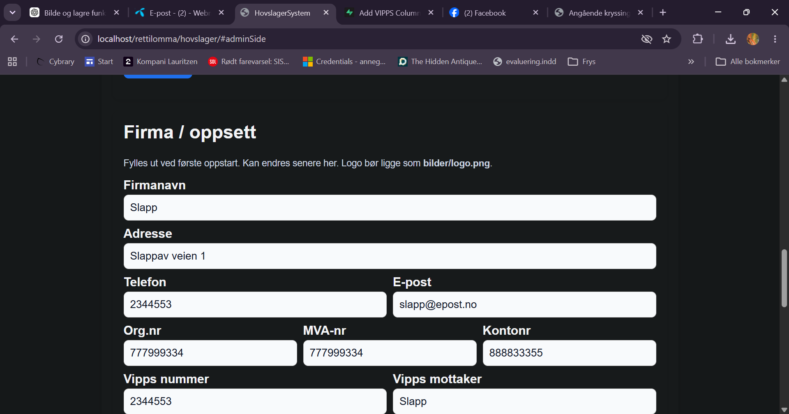
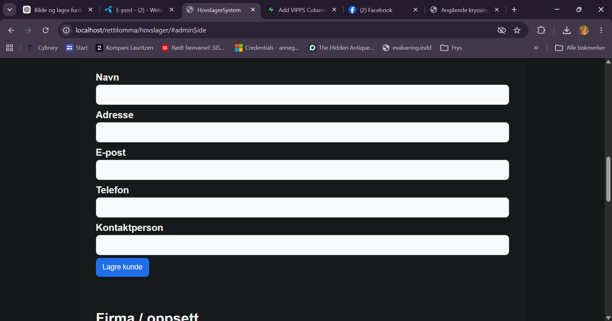
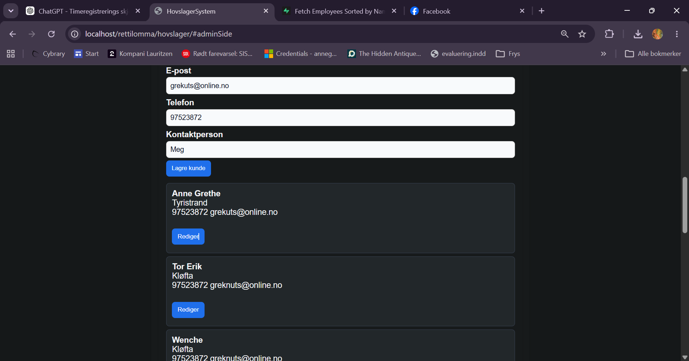
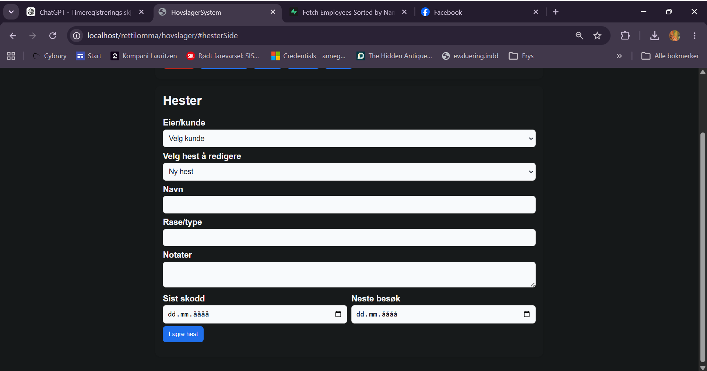
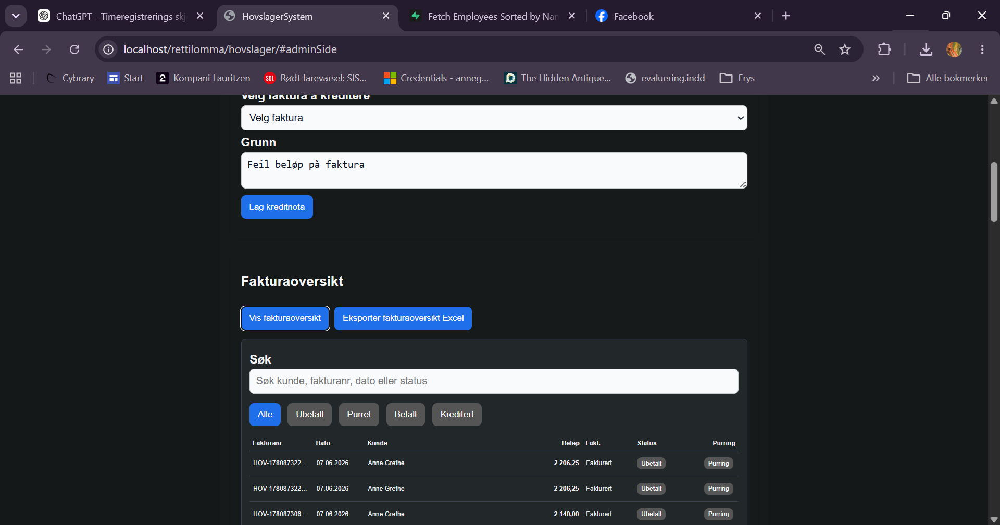

Rett i Lomma
Admin-veiledning for HovslagerSystem
For administrator som setter opp firma, kunder, hester, fakturaoversikt og grunnregister. Denne veiledningen bruker skjermbilder fra systemet.
1. Firma og oppsett
Start med å fylle ut firmaopplysningene. Disse brukes på faktura, kreditnota og betalingsinformasjon.

Firma / oppsett med firmanavn, adresse, telefon, e-post, org.nr, MVA-nr, kontonr, Vipps nummer og Vipps mottaker.
Firmanavn og adresse
Legg inn navn og adresse slik det skal vises på faktura.
Kontaktinfo
Telefon og e-post bør være den kunden kan bruke ved spørsmål.
Betaling
Kontonummer og Vipps-felt brukes på faktura. Sjekk ekstra nøye at tallene er riktige.
Trykk Lagre oppsett etter endringer. Test deretter med en faktura for å se at informasjonen vises riktig.
2. Registrere ny kunde
Kunder må registreres før hester og jobber kan kobles riktig.

Skjema for ny kunde med navn, adresse, e-post, telefon og kontaktperson.
- Gå til Admin og finn kundeskjemaet.
- Fyll inn navn, adresse, e-post, telefon og eventuelt kontaktperson.
- Trykk Lagre kunde.
- Sjekk at kunden kommer opp i kundelisten under skjemaet.
Minimum anbefalt: navn og telefon. E-post bør fylles ut hvis faktura eller dokumentasjon skal sendes digitalt.
3. Redigere kunde
Når en kunde allerede finnes, kan du bruke Rediger for å endre kundeinformasjon.

Kundeliste med Rediger-knapp for eksisterende kunder.
- Finn kunden i listen.
- Trykk Rediger.
- Oppdater feltene i skjemaet.
- Trykk Lagre kunde.
Unngå å lage samme kunde flere ganger. Rediger heller eksisterende kunde når telefon, adresse eller e-post endres.
4. Registrere hest
Hester registreres under Hester. Hver hest må kobles til riktig eier/kunde.

Hesteskjema med eier/kunde, velg hest å redigere, navn, rase/type, notater, sist skodd og neste besøk.
- Velg Eier/kunde.
- Velg Ny hest dersom hesten ikke finnes fra før.
- Fyll inn navn, rase/type og notater.
- Sett Sist skodd og Neste besøk når det er relevant.
- Trykk Lagre hest.
Når kunden har flere hester, er riktig hestenavn viktig. Da treffer både taleinnlesing, jobbliste og faktura bedre.
5. Fakturaoversikt, purring og status
Fakturaoversikten viser fakturanummer, dato, kunde, beløp, fakturastatus, betalingsstatus og purring.

Fakturaoversikt med søk, filterknapper og purring.
Søk
Søk på kunde, fakturanummer, dato eller status.
Filter
Bruk Alle, Ubetalt, Purret, Betalt og Kreditert for å finne riktige fakturaer.
Purring
Bruk purring når faktura er sendt, men betaling mangler.
Eksport
Eksporter fakturaoversikten til Excel for rapportering eller regnskap.
Fakturaer som er laget skal ikke regnes som ufakturerte jobber. Betalingsstatus er en egen oppfølging etterpå.
6. Anbefalt admin-rutine
- Fyll ut firmaoppsett først.
- Registrer eller kontroller kunden.
- Registrer hestene på riktig kunde.
- Kontroller fakturaoversikten jevnlig.
- Eksporter fakturaoversikt ved månedsslutt eller ved regnskapsavstemming.
- Ta backup før større endringer.
God datakvalitet i admin-delen gjør resten av appen raskere: tale, jobbregistrering, faktura og purring får riktige koblinger.